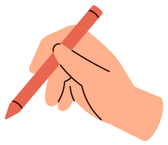
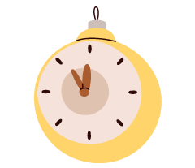
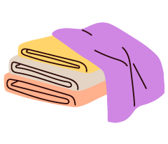
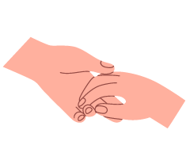

글. 김민경 정신건강의학과 전문의, <또 하나의 나, 감정에게> 저자
살다보면 눈물이 날 만큼 속상한 날이 있습니다. 그런데 울음이 터지려는 순간, 우리는 습관처럼 미소를 지으며 “아니야, 괜찮아”라고 중얼거립니다. 마치 슬픔이나 분노 같은 감정은 빨리 치워야 할 쓰레기처럼 말이죠. 감정을 느끼는 것 자체가 어색하고 불편한 시대, 우리는 과연 건강하게 살고 있는 걸까요?
최근 ‘감정 문맹’이라는 표현이 심리학계에서 주목받고 있습니다. 글을
읽고 쓸 줄 모르는 것처럼, 자신의 감정을 읽고 표현하는 능력이 퇴화하고
있다는 의미죠.
특히 한국인들은 ‘긍정이 미덕’인 문화의 영향을 짙게 받아 부정적인 감정
표현에 서툽니다. 2020년대 들어서는 이런 경향이 더 심해졌습니다. SNS의
‘행복 연출’과 직장의 ‘감정노동’이 일상화되면서, 진짜 감정은 점점 더
깊이 묻히고 있는 거죠.
놀랍게도 우리가 숨기려 애쓰는 부정적 감정을 오히려 드러내는 것이
도움이 됩니다. UCLA의 매튜 리버만(Matthew D. Lieberman) 교수팀이
2007년 발표한 연구가 이를 증명하죠. 연구에 따르면 ‘정서 명명(affect
labeling)’, 즉 감정에 이름을 붙이는 행위가 뇌의 편도체 활동을 줄이고
우측 복외측 전전두피질을 활성화시킨다고 합니다.
어렵게 들리시나요? 쉽게 말하면 이렇습니다. “아, 내가 지금 화가
났구나”라고 말하는 순간, 실제로 화의 강도가 줄어든다는 거예요. 감정을
언어로 표현하는 것만으로도 마음이 차분해지는 신기한 현상이 일어나는
겁니다.

① Stop & Label(멈추고 이름짓기)
부정적 감정이 올라올 때 잠시 멈춰보세요. 그리고 그 감정에 정확한
이름을 붙여봅니다. 막연한 “기분이 안 좋아”보다는 “실망감이구나”,
“배신감이야”, “무력하네” 등 구체적으로 표현할수록 좋아요.

② 하루 세 번 “내 기분 한마디”
아침, 점심, 저녁 알람을 맞춰두고 그 순간의 기분을 한 단어로
기록해보세요. ‘피곤함’, ‘설렘’, ‘짜증’ 뭐든 좋습니다. 판단하지
말고 있는 그대로 적어보는 거예요.
③ 3분 고민시간 가지기
문제가 생기면 즉시 “괜찮아”로 덮지 마세요. 휴대폰 타이머를 3분
맞추고 그 감정을 충분히 느껴보세요. 억누르지 않고 인정하는
시간입니다.
④ No-Positivity Day 정하기
일주일에 하루는 ‘긍정 금지의 날’로 정해보세요. 이날만큼은
“힘내”라는 말 대신 “그래, 지금은 힘들어도 돼”라고 자신을
다독여봅니다.

⑤ 불완전함과 친해지기
완벽주의에서 벗어나는 연습을 해보세요. 일부러 색칠을 선 밖으로
하거나, 정리를 조금 덜 하는 등 작은 불완전함을 허용해보는
겁니다.

⑥ 도움 요청 챌린지
“커피 한 잔 같이 마실래?” “이것 좀 도와줄 수 있어?” 하루에 한
번씩 작은 부탁을 해보세요. 혼자 감당하려는 습관에서 벗어나는
연습이 됩니다.
2024년 국립정신건강센터 조사를 보면 마음이 아픕니다. 정신건강 문제를
겪는 사람은 늘었는데, 도움받는 방법을 아는 사람은 오히려 줄었다고
합니다. 우리 모두가 ‘괜찮은 척’하기에 바빠서일까요?
다양하고 섬세한 감정을 스스로 인정하고 담아내다 보면 오히려 그런
감정에 깊이 빠지지 않고 자연스레 지나칠 수 있습니다. 슬픔도, 분노도,
불안도 모두 나라는 존재를 구성하는 중요한 부분이니까요.
오늘부터 감정을 기록하고 흘려보내는 연습을 해봅시다. 동시에 사소한
행복이나 감사 같은 긍정적 감정을 확장하여 크게 느껴보세요. 모호한
감정을 언어로 표현하는 것만으로도 정리가 되는 효과가 있답니다. 진짜
감정과 친구가 되는 그날까지, 천천히 한 걸음씩 함께 나아가요.